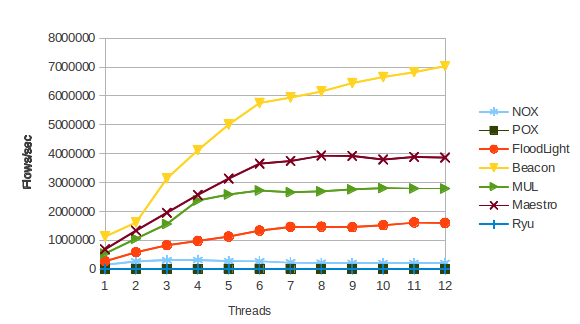

Collection of scripts for OpenFlow controllers performance testing
Collection of scripts for OpenFlow controllers performance testing using Cbench tool
June, 2013
Ctltest is a collection of scripts for performance benchmarking OpenFlow controllers. The scripts use Cbench tool to measure controllers' throughput and latency. The collection contains scripts for seven popular open source OpenFlow controllers (NOX, POX, Floodlight, Beacon, MuL, Maestro, Ryu), though you can add your own controller to the test.
The scripts install and start the controller on one server and then via SSH run Cbench on the other server (you also may use the same server for launching the controller and Cbench). Cbench sends Packet In messages to the controller and registers the controller's replies (Packet Out or Flow Mod messages).
Scripts run a number of tests, which help to analyze the correlation between the controllers' performance and the number of avaliable CPU cores, connected switches and hosts. For example, you can plot the correlation between the number of CPU cores and the controllers' throughput:
The project contains the following scripts:
All scripts were used for testing controllers under Debian/Ubuntu (tested with Ubuntu 12.04 LTS).
To install all the controllers run install_contr.sh script, which takes one parameter - the path to the directory where they should be installed.
To install the controllers to the current directory:
./install_contr.sh .
First, install the controllers (see Install Controllers section). All scripts are run on the server where the controllers are installed.
To run benchmarks you need to get Cbench tool.
If you are going to use one server for running the controllers and Cbench, install Cbench on the server where you've run install_contr.sh script ("Controllers server"). Otherwise, install it to another server ("Cbench server").
To benchmark throughput or latency of all the installed controllers use benchmark_thrpughput.sh and benchmark_latency.sh scripts.
To run tests with defaults, if you have installed the controllers into the current directory and have 12 CPU cores:
./benchmark_throughput.sh
./benchmark_latency.sh
benchmark_throughput.sh options:
-h show help message
-d path to dir with controllers (.)
-S username@ip for Cbench server (127.0.0.1)
-c ip for Controllers server (localhost)
-r number of Cbench runs for each testcase (3)
-t number of CPU cores (12)
-m one Cbench test duration (for Cbench), msec (10000)
-l number of test loops (for Cbench) (10)
-s list of switches (for Cbench) ('1 4 16 32 64 256')
-M list of MACs per switch (for Cbench) ('1000 10000 100000 1000000 10000000')
-f fixed MACs for switch number iterating (100000)
-x fixed number of switches for MACs iterating (32)
benchmark_latency.sh options:
-h show help message
-d path to dir with controllers (.)
-S username@ip for Cbench server (127.0.0.1)
-c ip for Controllers server (localhost)
-r number of Cbench runs for each testcase (3)
-m one Cbench test duration (for Cbench), msec (10000)
-l number of test loops (for Cbench) (10)
-M list of MACs per switch (for Cbench) ('1000 10000 100000 1000000 10000000')
By default it is assumed that you run the controllers on the same host with Cbench. If you want to benchmark the controllers running on a remote host, pass IP adresses of control network interface at the Cbench server and the Controllers server with the script params, e.g.:
./benchmark_throughput.sh -S login@192.168.1.42 -c 192.168.1.41
Note that you can set the login which will be used for SSH connection to the Cbench server (also we advise to manage the SSH keys on both servers to avoid entering password each time Cbench is run).
Also note that if you set -s parameter for benchmark_throughput.sh the -f parameter must be passed as well. The same is true for the -M and -x options.
Each script starts the controllers on the Controller server and then runs Cbench on the Cbench server via SSH. Controllers are run with different number of avaliable cores. Cbench is run in throughput or latency mode and varying the number of switches and MACs.
The Cbench logs are written to contr_log_th and contr_log_lat.
The stat.sh script is run automaticaly in the background. The log is written to stats_th and stats_lat.
Note that by default Trema controller is not included in the test, as it doesn't work properly under Cbench workload with 10 sec test duration. To include Trema, add 04_Trema to the CONTR_DIR lists in benchmark_throughput.sh and benchmark_latency.sh scripts. You also need to set a smaller test duration, e.g.:
./benchmark_throughput.sh -m 5000
./benchmark_latency.sh -m 5000
To plot the results of throughput testing run:
./plotter.py contr_log_th
To test your own controller you need to create a directory containing the following scripts:
For scripts examples see the existing controllers' scripts.
Then add the name of your directory to the CONTR_DIR list in each script: install_contr.sh, benchmark_throughput.sh and benchmark_latency.sh. Now you can run the scripts as described above, your controller will be added to the tests.
If you want to contribute or to add other controllers to the tests, contact us: dev@arccn.ru.
{kind=link}